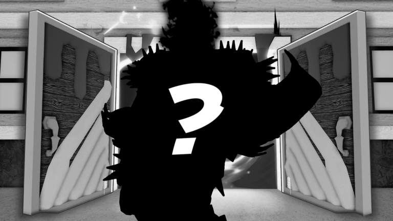

✅ OFICIAL: update-ul de Halloween din Blox Fruits vine sâmbătă, 31 oct, la 16:00

🔄 UPDATE 27 oct (✅ CONFIRMAT): zvonul s-a confirmat. Pe pagina oficială Roblox a apărut eventul „🎃 HALLOWEEN!”, cu subtitlul „Trick-Or-Treat Event”. Îl publică Gamer Robot Inc, grupul verificat care face Blox Fruits.
📅 Când (ora României):
- ▶️ Începe: sâmbătă, 31 oct, la 16:00
- ⏹️ Se termină: duminică, 15 nov, la 03:00
Data de 31 oct, sâmbătă, e aceeași cu cea din zvonul lui Czubix din 21 oct. Ora de 16:00 o dă pagina oficială.
✅ Pe pagina eventului descrierea e goală. Subtitlul („Trick-Or-Treat Event”) arată că e un event de tip trick-or-treat, dar nu spune ce se primește.
✅ Am citit în API-ul public Roblox (27 oct, ~00:45 RO): 124.242 de jucători online și 65.113.290.607 de vizite pe „Blox Fruits”.
❓ Ce NU știm:
- Ce conține update-ul de Halloween (fructe, iteme, boss, hartă) și dacă apare un trailer
- Cum funcționează trick-or-treat în joc și ce recompense sunt
- Dacă update-ul și eventul se leagă de Blox Bulletin #25
🔗 Pagina oficială a eventului: https://www.roblox.com/events/5531114895191442089
🕰️ Cum a început: pe 21 oct, contul @czub2ix1 (Czubix) scrisese că update-ul de Halloween ar veni sâmbătă, 31 oct. Czubix a spus atunci că Uzoth (dev-ul Blox Fruits) a confirmat data, dar postarea lui Uzoth n-a fost găsită, deci a rămas zvon până acum. Ce scrie oficial despre conținut găsești în Blox Bulletin #25: https://pyromanc3r777.github.io/vexu-hq/posts/blox-fruits-blox-bulletin-25-halloween.html
Follow pe TikTok @vexu_online și abonare pe YouTube la VEXU Online. Follow = Au ce bile! 💥